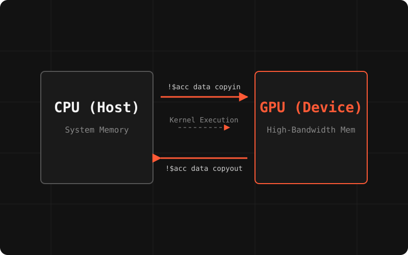
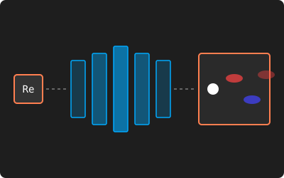
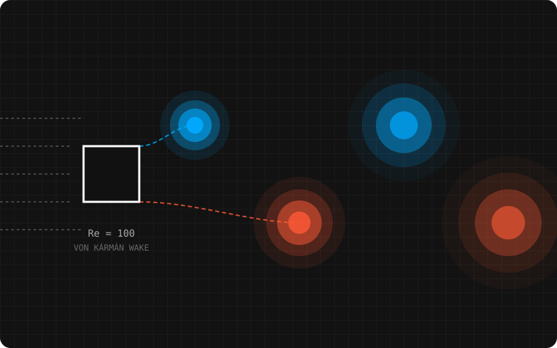
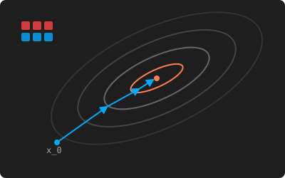
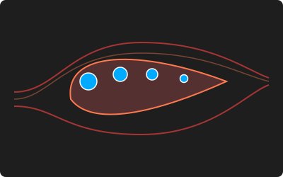
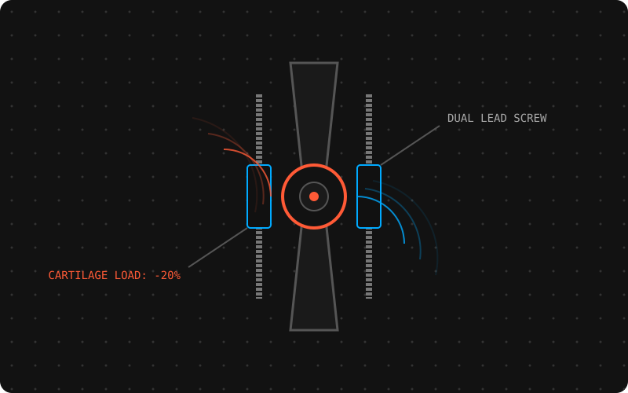

The project index.
Everything on one shelf — computational fluid dynamics, machine learning surrogates, parallel solvers, and mechanical design. Filter by discipline or browse the lot.

Parallelized Navier-Stokes-Fourier Solver
M.Tech thesis — parallelizing an in-house unstructured cell-centered FVM solver for compressible flows using MPI and OpenACC.
Case study
CNN-Based Surrogate Model for Vortex Shedding
Developing deep learning surrogate models parameterized by Reynolds number to output vortex shedding flow fields.
Case study
2D Incompressible Navier-Stokes Solver
Numerical methods implementation featuring fractional-step schemes on a staggered grid.
Case study
CG & PCG Iterative Solvers
Implementation of Krylov subspace methods and parallel computing acceleration techniques.
Case study
Turbine Blade Cooling Analysis
Utilizing liquid coolants for turbine blade thermal management evaluated via Fortran-driven compressible flow simulations.
Case study
Knee Exoskeleton "Smart-Dial" Joint
Mechanical design and physical prototyping of an off-loading orthosis joint.
Case study